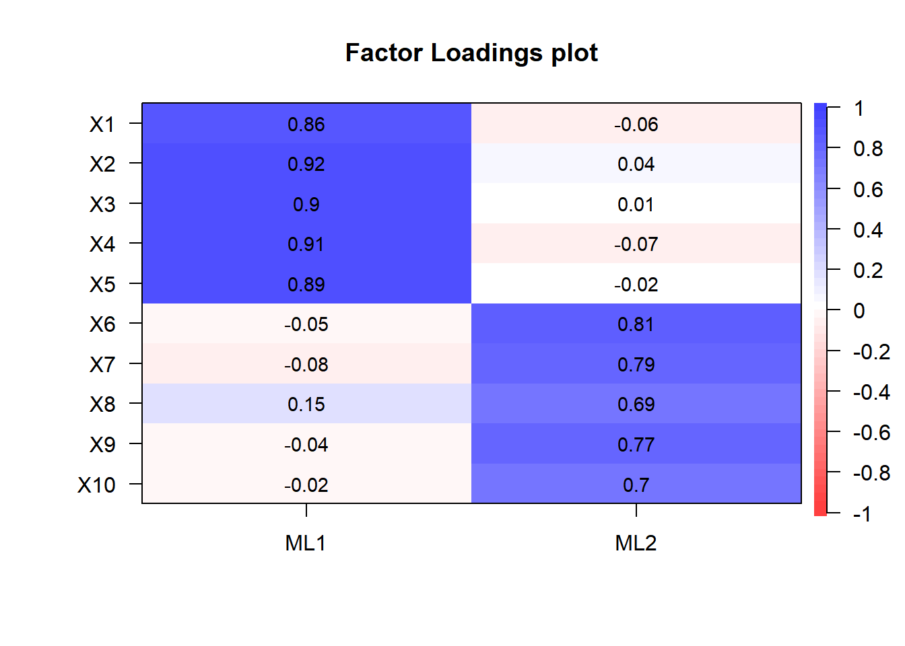

ここでは，Rのpsychパッケージのfa関数を使った 探索的因子分析の方法を紹介します。 同様の方法は多くの心理統計についての書籍に掲載されています。
ここでは，因子分析で仮定されるモデルからデータを生成し，それに対し因子分析を実行してパラメータや変数の推定をします。
本ページで使用するパッケージがインストールされていない場合は，以下の コマンドをコンソールに入力してインスト―ルしてください。
install.packages("psych")
install.packages("GPArotation")因子分析のために使うパッケージを読み込みます。
library(psych)
library(GPArotation)ここでは項目\(j\)に対する回答が \(y_{j} = a_{j1} f_{1} + a_{j2} f_{2} + \epsilon_{j}\)で与えられるとするモデルを考えます。 共通因子は\(f_{1}\)と\(f_{2}\)の2つで，それぞれの項目\(j\)に対する 因子負荷は\(a_{j1}\), \(a_{j2}\)という構造のモデルです。 \(\epsilon_{j}\)は項目ごとに独立に加わる独自因子です。 \(f\)と\(\epsilon\)は全ての添え字の変数について，互いに独立に平均ゼロ，分散1の標準正規分布に従うと仮定されます。
以下，ループを回して仮想的な回答者ごとに回答データを生成します。 (生成プロセスが理解しやすいよう，行列は使いません。)
# 乱数のシードを設定
set.seed(1)
n <- 100 # 回答者数
p <- 10 # 項目数
# 因子負荷
a1 <- c(2,2,2,2,2,0,0,0,0,0) # factor 1 項目1-5だけに値を持つ
a2 <- c(0,0,0,0,0,1,1,1,1,1) # factor 2 項目6-10だけに値を持つ
# 仮想回答データを入れる変数のメモリを確保
y <- matrix(nrow = n, ncol = p)
# 真の因子の値を入れるデータフレーム
df_fs <- data.frame(matrix(nrow = n, ncol = 2))
for (idx in 1:n){
# 回答者idxの (真の) 因子スコアは標準正規分布から生成する
f1 <- rnorm(n = 1, mean = 0, sd = 1) # factor 1
f2 <- rnorm(n = 1, mean = 0, sd = 1) # factor 2
# 回答者idxの仮想回答データ
y[idx,] <- a1 * f1 + a2 * f2 +
rnorm(p, mean = 0, sd = 1) # 独自因子
colnames(df_fs) <- c("f1", "f2")
df_fs[idx,"f1"] <- f1
df_fs[idx,"f2"] <- f2
}
# 観測される仮想回答データをデータフレームに格納
df_data <- data.frame(y)データが正しくデータフレームに格納されているか，以下で確認します。
dim(df_data)## [1] 100 10head(df_data,5)| X1 | X2 | X3 | X4 | X5 | X6 | X7 | X8 | X9 | X10 |
|---|---|---|---|---|---|---|---|---|---|
| -2.0885362 | 0.3423732 | -0.9233998 | -2.073376 | -0.7654786 | 0.9219680 | 0.7594247 | -0.1217451 | 1.6954245 | 0.5734866 |
| -0.1175502 | -1.2874148 | -1.2586714 | -0.298645 | -0.4212600 | -1.6207986 | -1.2957225 | -1.4325636 | -2.1401349 | -4.2040516 |
| 1.0838560 | -0.2311009 | 0.7615014 | 1.657593 | 2.5983310 | -0.1589165 | 0.3315429 | -0.1099338 | -1.4331883 | -0.4711233 |
| 0.3114455 | -0.0254042 | -0.9531035 | -1.041942 | -0.0916165 | 0.4973498 | -0.7480691 | -0.7668086 | 0.3052686 | 0.7092195 |
| 0.1734135 | -0.8367188 | 0.1164273 | -1.354056 | 1.2083313 | 2.8615076 | 0.5138862 | -0.1630269 | 1.4508274 | 0.7460531 |
以下でデータの相関行列をプロットします。
cor.plot(cor(df_data), numbers = T)スクリーテストでは，観測変数の相関行列の固有値の変化がなだらかになる直前の固有値の数を因子数とします。以下のように固有値を大きい順に並べたものをスクリープロットと呼びます。
VSS.scree(df_data)このスクリープロットより，第3固有値以降の推移がなだらかになっていることが確認できます。スクリーテストでは，そのようになだらかになる直前までの固有値の数を因子数として選択します。したがって，ここでは 真の因子数 (データを生成した真のモデルの因子の数) である2が選択されます。 また，固有値が1.0以上の数を因子数とするのがガットマン基準です。ガットマン基準でも因子数は2が選択されます。
以下では最尤法により因子負荷を推定します。 varimax法で因子負荷の直交回転を行います。
res_fa <- fa(r = df_data,
nfactors = 2, # 因子数
rotate = "varimax", # 回転法はvarimaxを指定
fm = "ml" # 最尤法を指定
)
cor.plot(res_fa, numbers = T) 以下で因子分析の結果を表示します (長くなるのでここでは出力は省略します)。
print(res_fa)推定した因子分析モデルから 回答者ごとの因子スコア (\(f\)) を推定します。 因子スコアはfaを実行した際も計算されていますが (res_fa$scoresで取り出せます)，ここではGerlachらが用いた方法と 同じ結果を出すHarmanの方法で再度推定してみます。
fsc <- factor.scores(df_data,
f = res_fa,
method = "Harman")推定された因子スコアを，データ生成時に記録しておいた真の因子スコアと比較してみましょう。
# データフレームにまとめる
df_fs <- cbind(df_fs, fsc$scores)
# 散布図をプロットする
plot(df_fs)因子“ML1”の因子スコアと(真の)因子f1が， 因子“ML2”の因子スコアと因子f2が強く相関し，推定がうまくいっていることがわかります。また，factor 1の方が真の因子負荷量が大きく，ノイズに対するシグナル比が高いため因子スコアの推定精度は高くなっています。